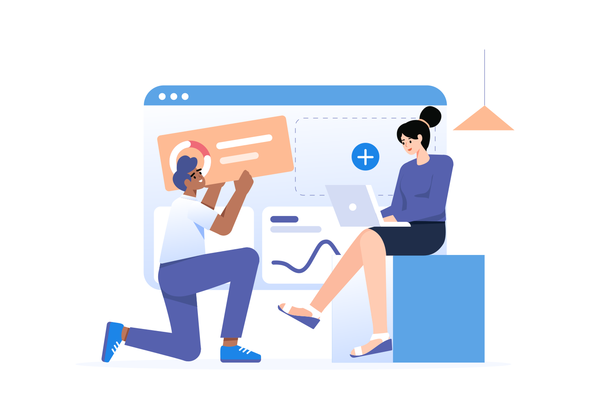

Já tem blog e quer mais resultados?
As melhores ferramentas para seu blog!
Encontre as melhores ferramentas para blogs, que eu uso todos os dias, e que me ajudaram a viver de blogs.
Como divulgar seu blog
Aprenda divulgar seu blog para ter acessos sem precisar postar todos os dias. Aprenda sobre redes sociais, mecanismos de pesquisa e mais.

Ganhar dinheiro com blog
Aprenda diversas estratégias para ganhar dinheiro com seu blog. Anúncios, afiliados, infoprodutos é mais!

Te ajudamos a construir seu blog do zero!
Em meio ao desafio de iniciar e administrar um blog, compreendemos que a tarefa pode se tornar avassaladora.
No entanto, o TecBlog está aqui para simplificar todo o processo para você, oferecendo uma variedade de soluções que atendem às suas necessidades e às do seu negócio.
Desde a criação até a gestão, estamos comprometidos em facilitar sua jornada no universo dos blogs, proporcionando ferramentas e recursos diversificados.
Conte conosco para descomplicar e impulsionar o sucesso do seu blog e do seu empreendimento!